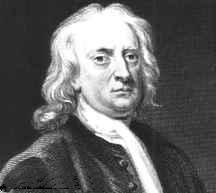

Newton, Isaac (1642-1727), matemático y físico británico, considerado uno de los más grandes científicos de la historia, que hizo importantes aportaciones en muchos campos de la ciencia. Sus descubrimientos y teorías sirvieron de base a la mayor parte de los avances científicos desarrollados desde su época. Newton fue, junto al matemático alemán Gottfried Wilhelm Leibniz, uno de los inventores de la rama de las matemáticas denominada cálculo. También resolvió cuestiones relativas a la luz y la óptica, formuló las leyes del movimiento y dedujo a partir de ellas la ley de la gravitación universal. Véase Mecánica.
Nació el 25 de diciembre de 1642 (según el calendario juliano vigente entonces; el 4 de enero de 1643, según el calendario gregoriano vigente en la actualidad), en Woolsthorpe, Lincolnshire. Cuando tenía tres años, su madre viuda se volvió a casar y lo dejó al cuidado de su abuela. Al enviudar por segunda vez, decidió enviarlo a una escuela primaria en Grantham. En el verano de 1661 ingresó en el Trinity College de la Universidad de Cambridge y en 1665 recibió su título de bachiller.
Después de una interrupción de casi dos años provocada por una epidemia de peste, Newton volvió al Trinity College, donde le nombraron becario en 1667. Recibió el título de profesor en 1668. Durante esa época se dedicó al estudio e investigación de los últimos avances en matemáticas y a la filosofía natural, que consideraba la naturaleza como un organismo de mecánica compleja. Casi inmediatamente realizó descubrimientos fundamentales que le fueron de gran utilidad en su carrera científica.
Newton obtuvo en el campo de la matemáticas sus mayores logros. Generalizó los métodos que se habían utilizado para trazar líneas tangentes a curvas y para calcular el área bajo una curva, y descubrió que los dos procedimientos eran operaciones inversas. Uniéndolos en lo que él llamó el método de las fluxiones, Newton desarrolló en el otoño de 1666 lo que se conoce hoy como cálculo, un método nuevo y poderoso que situó a las matemáticas modernas por encima del nivel de la geometría griega.
Aunque Newton fue su inventor, no introdujo el cálculo en las matemáticas europeas. En 1675 Leibniz llegó de forma independiente al mismo método, al que llamó cálculo diferencial; su publicación hizo que Leibniz recibiera en exclusividad los elogios por el desarrollo de ese método, hasta 1704, año en que Newton publicó una exposición detallada del método de fluxiones, superando sus reticencias a divulgar sus investigaciones y descubrimientos por temor a ser criticado. Sin embargo, sus conocimientos trascendieron de manera que en 1669 obtuvo la cátedra Lucasiana de matemáticas en la Universidad de Cambridge.
La óptica fue otra área por la que Newton demostró interés muy pronto. Al tratar de explicar la forma en que surgen los colores llegó a la idea de que la luz del Sol es una mezcla heterogénea de rayos diferentes —representando cada uno de ellos un color distinto— y que las reflexiones y refracciones hacen que los colores aparezcan al separar la mezcla en sus componentes. Newton demostró su teoría de los colores haciendo pasar un rayo de luz solar a través de un prisma, el cual dividió el rayo de luz en colores independientes.
En 1672 Newton envió una breve exposición de su teoría de los colores a la Royal Society de Londres. Su publicación provocó tantas críticas que confirmaron su recelo a las publicaciones, por lo que se retiró a la soledad de su estudio en Cambridge. En 1704, sin embargo, publicó su obra Óptica, en la que explicaba detalladamente su teoría.
Los principios
En agosto de 1684 la soledad de Newton se vio interrumpida por la visita de Edmund Halley, un astrónomo y matemático con el que discutió el problema del movimiento orbital. Newton había estudiado la ciencia de la mecánica como estudiante universitario y en esa época ya tenía ciertas nociones básicas sobre la gravitación universal. Como resultado de la visita de Halley, volvió a interesarse por estos temas.
Durante los dos años y medio siguientes, Newton estableció la ciencia moderna de la dinámica formulando las tres leyes del movimiento. Aplicó estas leyes a las leyes de Kepler sobre movimiento orbital —formuladas por el astrónomo alemán Johannes Kepler— y dedujo la ley de la gravitación universal. Probablemente, Newton es conocido sobre todo por su descubrimiento de la gravitación universal, que muestra cómo a todos los cuerpos en el espacio y en la Tierra les afecta la fuerza llamada gravedad. Publicó su teoría en Principios matemáticos de la filosofía natural (1687), obra que marcó un punto de inflexión en la historia de la ciencia, y con la que perdió el temor a publicar sus teorías.
La aparición de Principios también implicó a Newton en un desagradable episodio con el filósofo y físico Robert Hooke. En 1687 Hooke afirmó que Newton le había robado la idea central del libro: que los cuerpos se atraen recíprocamente con una fuerza que varía inversamente al cuadrado de la distancia entre ellos. Sin embargo, la mayor parte de los historiadores no aceptan los cargos de plagio de Hooke.
En el mismo año de 1687, Newton apoyó la resistencia de Cambridge contra los intentos del rey Jacobo II de Inglaterra por convertir la universidad en una institución católica. Después de la Revolución Gloriosa de 1688, que expulsó a Jacobo II de Inglaterra, la universidad eligió a Newton como uno de sus representantes en una convocatoria especial del Parlamento británico. Los cuatro años siguientes fueron de gran actividad para Newton, que animado por el éxito de Principios, trató de compendiar todos sus primeros logros en una obra escrita. En el verano de 1693 Newton mostró síntomas de una severa enfermedad emocional. Aunque recuperó la salud, su periodo creativo había llegado a su fin.
Las conexiones de Newton con los dirigentes del nuevo régimen de Inglaterra le llevaron a su nombramiento como inspector y más tarde director de la Casa de la Moneda en Londres, donde vivió hasta 1696. En 1703 fue elegido presidente de la Royal Society, un cargo que ocupó hasta el final de su vida. Como presidente, ordenó la inmediata publicación de las observaciones astronómicas del primer astrónomo real de Inglaterra John Flamsteed. Newton necesitaba estas observaciones para perfeccionar su teoría lunar; este tema le ocasionó ciertos conflictos con Flamsteed.
Newton también se implicó en una violenta discusión con Leibniz acerca de la prioridad de la invención del cálculo. Utilizó su cargo de presidente de la Royal Society para que se formara una comisión que investigara el tema, y él, en secreto, escribió el informe de la comisión que hacía a Leibniz responsable del plagio. Newton incluso recopiló la relación de acusaciones que esta institución había publicado. Los efectos de la disputa se alargaron casi hasta su muerte.
Además de su interés por la ciencia, Newton también se sintió atraído por el estudio de la alquimia, el misticismo y la teología. Muchas páginas de sus notas y escritos —especialmente en los últimos años de su carrera— están dedicadas a estos temas. Sin embargo, los historiadores han encontrado poca relación entre estas inquietudes y sus trabajos científicos.
|
 |
La obra de Isaac Newton representa una de las mayores contribuciones a la ciencia realizadas nunca por un solo individuo. Entre otras cosas, Newton dedujo la ley de la gravitación universal, inventó el cálculo infinitesimal y realizó experimentos sobre la naturaleza de la luz y el color